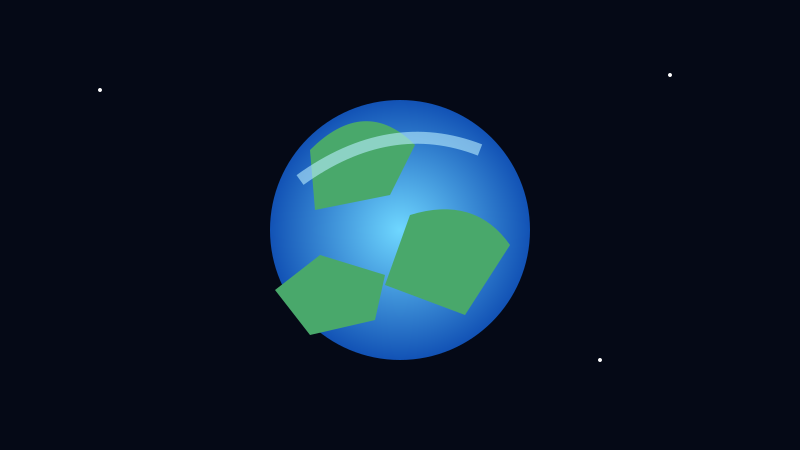
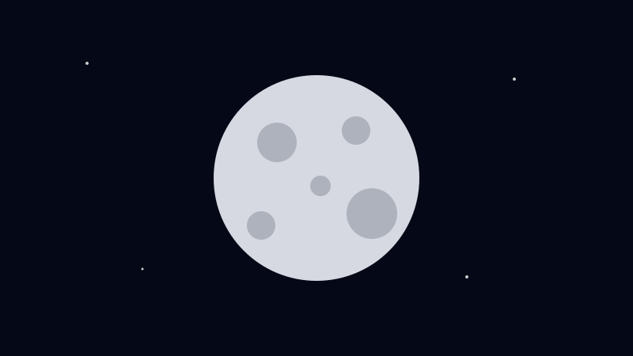
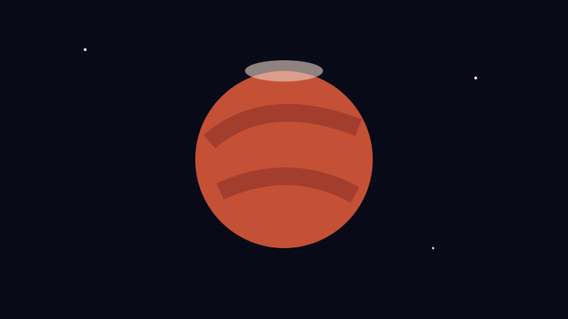
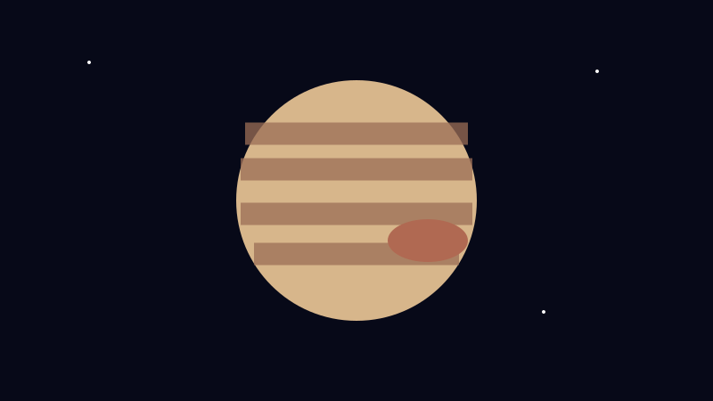
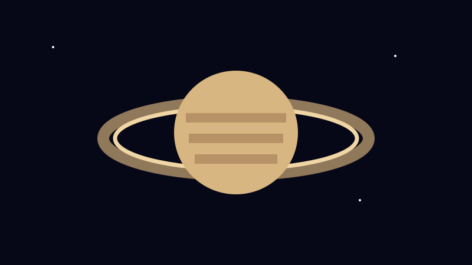

PEMBELAJARAN
🪐 Tata Surya
Mulai dari bintang pusat sampai benda-benda kecil yang mengelilinginya.

Bintang di pusat Tata Surya dan sumber utama cahaya serta energi bagi Bumi.

Planet tempat kita hidup, dengan air dalam jumlah besar dan satu satelit alami.

Satelit alami Bumi yang mengorbit planet kita dan memengaruhi pasang surut.

Planet berbatu berwarna kemerahan yang menjadi salah satu target utama eksplorasi.

Planet terbesar di Tata Surya dan termasuk raksasa gas.

Raksasa gas yang terkenal dengan sistem cincin yang sangat jelas.

Komet kaya es dan debu, sedangkan asteroid umumnya berupa batuan dan logam.

Objek dengan gravitasi ekstrem sehingga cahaya pun tidak dapat lolos dari batas tertentu.
Ledakan dahsyat yang dapat terjadi pada tahap akhir kehidupan bintang tertentu.